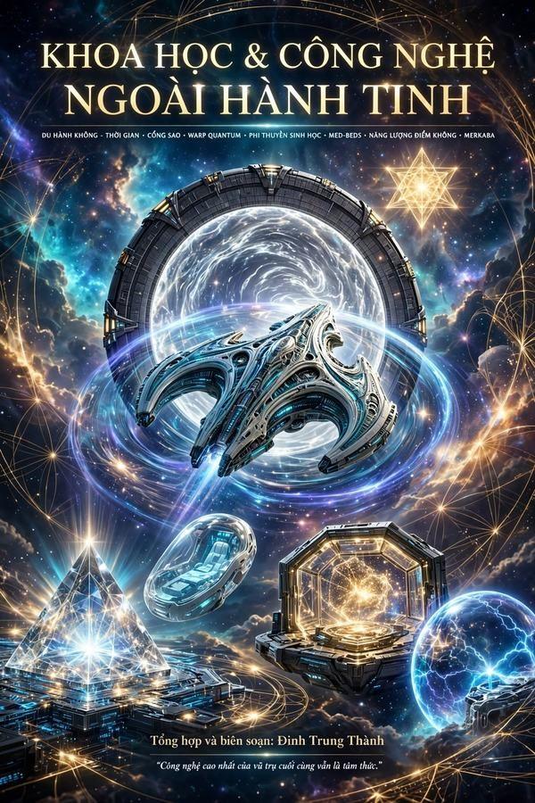
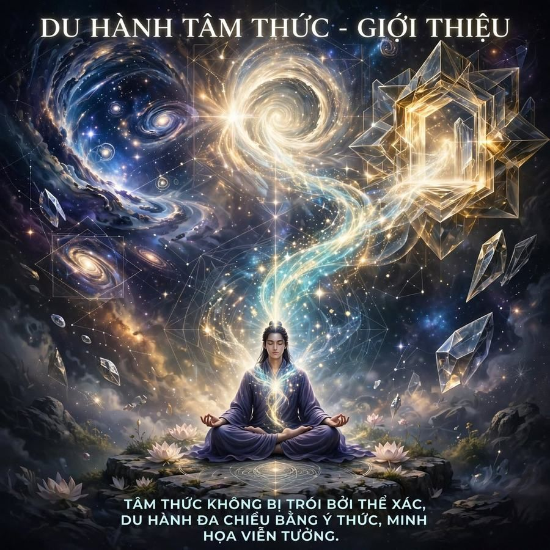
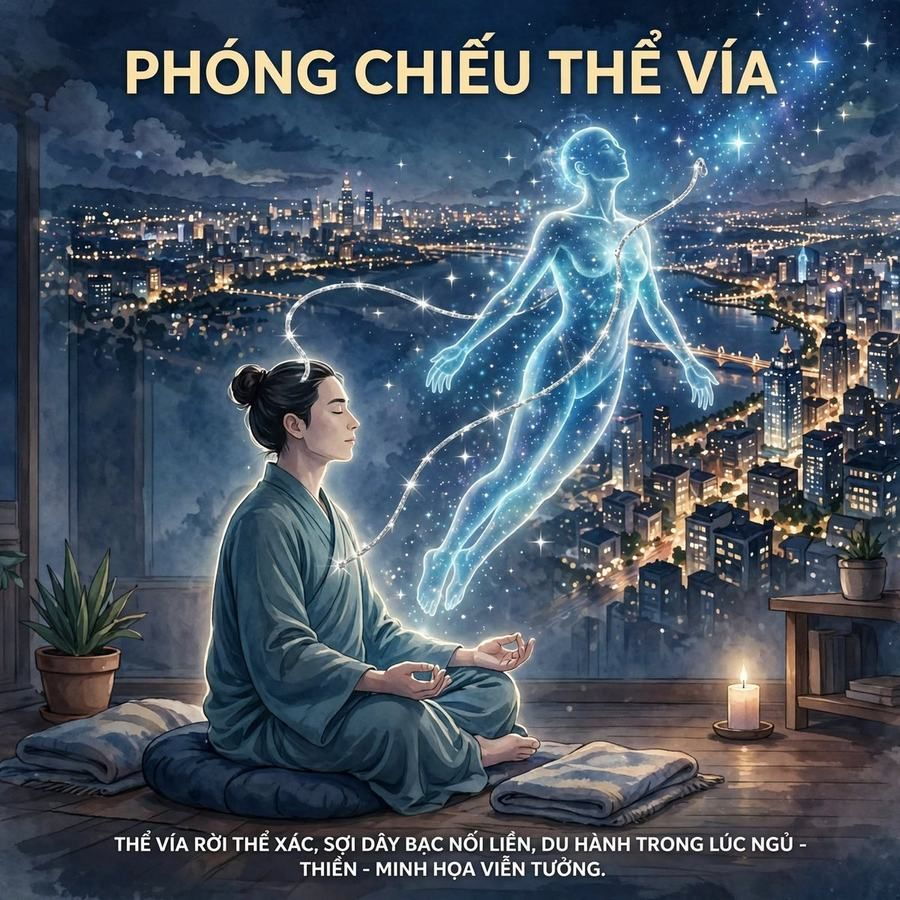
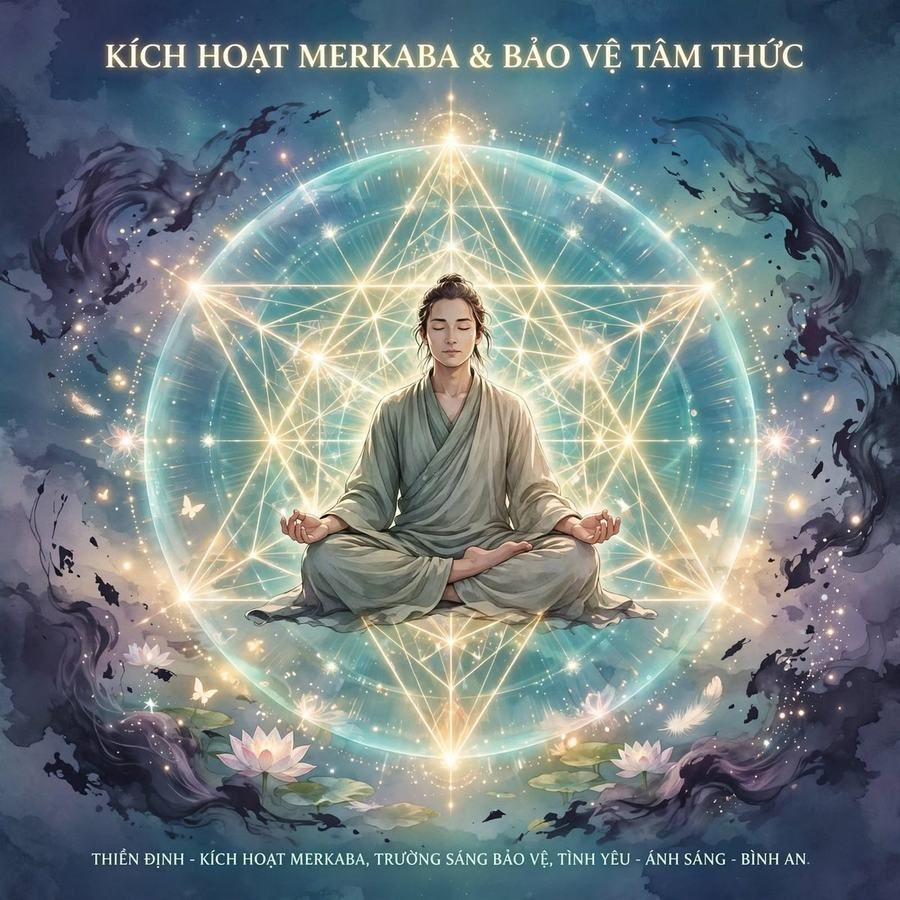
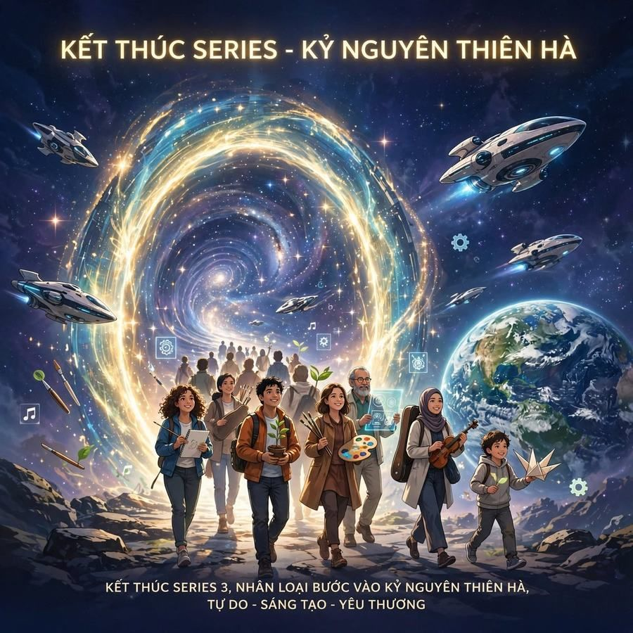

Trang chủ / Chuyên đề 8: Khoa Học & Công Nghệ / Kỳ 80
Chuyên đề 8 · Kỳ 80 / 90
CÔNG NGHỆ DU HÀNH TÂM THỨC, PHÓNG CHIẾU THỂ VÍA & TẦU THỂ PHÁCH (MERKABA)

Bạn đã bao giờ tự hỏi: Đỉnh cao tối thượng của khoa học công nghệ trong Vũ trụ sẽ đi về đâu khi máy móc, kim loại hay các cuộn cảm điện từ không còn là phương tiện di chuyển chính? Điều gì xảy ra khi một sinh mệnh có thể di chuyển xuyên qua các dải thiên hà, đi qua các cánh cổng siêu chiều và kiến tạo nên thực tại vật lý chỉ bằng Sức mạnh của Ý thức Thuần khiết? Tại sao những nền văn minh tiến hóa nhất trong dải Ngân Hà lại không sở hữu những phi thuyền bằng hợp kim thô kệch, mà di chuyển bằng những cỗ xe ánh sáng tỏa hào quang rực rỡ có khả năng xuất hiện và biến mất ngay trong tâm trí?
Trong 9 kỳ trước của chuyên đề Khoa học & Công nghệ, chúng ta đã cùng nhau giải mã vô số những thành tựu kỹ thuật kinh ngạc: từ Động cơ Warp bẻ cong không gian, Cổng Sao Stargates, Phi thuyền Sinh học Lượng tử, Buồng Y tế Med-Beds, Năng lượng Điểm Không, Khiên Plasma, Máy Replicator tái tạo vật chất, cho đến Vũ khí Tần số và Buồng Ngủ đông Stasis.
Tuy nhiên, tất cả những công nghệ vật lý và điện từ đó vẫn chỉ là "những bước đi chập chập ban đầu" trên con đường tiến hóa vô tận của Vũ trụ. Ở dải mật độ cao hơn (từ 5D, 6D đến 9D và xa hơn nữa), khoa học và tâm thức không còn là hai khái niệm tách biệt, mà hòa nhập trọn vẹn làm một (Consciousness-Tech Unification)!
Hãy cùng bước vào kỳ cuối cùng của chuỗi chuyên đề để giải mã đỉnh cao tối thượng của khoa học thiên hà: Công nghệ Du hành Tâm thức, Phóng chiếu Thể Vía, Chuyển đổi Mật độ Sinh học và Phi thuyền Ánh sáng Merkaba!
✦ ✦ ✦1. BỐI CẢNH VÀ BẢN CHẤT TỐI THƯỢNG: TÂM THỨC LÀ NỀN TẢNG CỦA MỌI VẬT CHẤT
Để thấu hiểu được công nghệ du hành tâm thức, trước hết chúng ta cần đập tan quan niệm vật chất thô sơ của nền khoa học 3D cũ.
A. Sự Giới hạn của Công nghệ Máy móc Thô cứng
- Sự Phụ thuộc vào Vật thể Bên ngoài: Ở các dải mật độ thấp (3D/4D), sinh mệnh vẫn cần dựa vào các công cụ bên ngoài — như vỏ kim loại phi thuyền, máy tính lượng tử hay các lò phản ứng năng lượng — để di chuyển và bảo vệ bản thân.
- Nguy cơ Bị thao túng hay Hư hỏng: Bất kỳ cỗ máy vật lý hay mạng lưới điện từ nào, dù tinh vi đến đâu, vẫn có nguy cơ bị hỏng hóc, bị vô hiệu hóa hoặc bị can thiệp bởi các sóng đối kháng từ kẻ thù.
B. Nguyên lý Tâm thức Nguồn (Source Consciousness Supremacy)
Khoa học tối thượng của thiên hà khẳng định chân lý tuyệt đối:
- Tâm thức không phải là sản phẩm của Bộ Não: Bộ não vật lý chỉ là bộ thu phát tín hiệu. Tâm thức (Consciousness / Soul Spark) là một điểm sáng năng lượng phi vật thể phát xuất trực tiếp từ Nguồn Vũ Trụ (The Source), có trước vật chất và tồn tại vĩnh hằng xuyên qua mọi dải không gian - thời gian.
- Vật chất là Sự Phản chiếu của Ý định (Intent-Driven Matter): Toàn bộ cấu trúc nguyên tử, trường từ trường hay các dải thực tại trong Vũ trụ thực chất chỉ là những "nếp gấp năng lượng" được định hình và giữ lại bởi Trường Ý thức Tập trung. Khi tâm thức phát triển đạt đến độ thuần khiết tuyệt đối, nó có thể trực tiếp điều khiển vật chất mà không cần thông qua bất kỳ máy móc trung gian nào!

2. CÔNG NGHỆ PHÓNG CHIẾU THỂ VÍA VÀ DU HÀNH TÂM THỨC XUYÊN KHÔNG - THỜI GIAN
Khái niệm "Phóng chiếu Thể Vía" (Astral Projection / Out-of-Body Travel) không phải là một hiện tượng huyền bí tâm linh vô căn cứ, mà là một Bộ môn Khoa học Lượng tử Tự nhiên được chuẩn hóa tại các nền văn minh tiên tiến.
A. Cấu trúc Các Thể Năng lượng của Sinh mệnh (Multi-Dimensional Bodies)
Mỗi sinh mệnh không chỉ sở hữu một thể xác vật lý 3D, mà đồng thời tồn tại nhiều lớp thể năng lượng đa chiều:
- Thể Xác Vật lý (Physical Body): Dải tần số dao động thô nhất, dùng để tương tác với thế giới vật chất.
- Thể Phách (Etheric Body): Khung mạng lưới năng lượng chứa hệ thống luân xa và đường kinh mạch sinh học.
- Thể Vía / Thể Tâm thức (Astral / Consciousness Body): Thể năng lượng ánh sáng chứa đựng trí tuệ, cảm xúc và ký ức cá thể, có khả năng di chuyển với tốc độ vô hạn xuyên qua các dải mật độ.
B. Buồng Hỗ trợ Phóng chiếu Tâm thức (Consciousness Projection Pods)
Tại một số nền văn minh, để hỗ trợ cho các sinh mệnh chưa hoàn toàn làm chủ việc phân tách tâm thức tự nhiên hoặc để phục vụ các sứ mệnh thám hiểm xa:
- Cơ chế Hoạt động của Buồng Projection: Sinh mệnh nằm vào buồng tinh thể. Thiết bị phát ra các dải sóng âm tần số Theta và Delta dịu nhẹ, đưa thể xác vật lý vào trạng thái điềm tĩnh tuyệt đối.
- Bóc tách Thể Tâm thức An toàn: Hệ thống thạch anh lượng tử chiếu chùm năng lượng vi mô giúp bóc tách thể tâm thức (Astral Body) rời khỏi thể xác vật lý một cách nhẹ nhàng. Sợi dây năng lượng bạc (Silver Cord) vẫn duy trì kết nối an toàn tuyệt đối giữa thể tâm thức và thể xác.
- Du hành và Thám hiểm Toàn Vũ trụ: Thể tâm thức có thể đi qua các Cổng Sao, xâm nhập vào các dải không gian xa xôi, đi xuyên qua các hành tinh hay các tàu chiến địch để thu thập thông tin, nghiên cứu khoa học hoặc chữa lành năng lượng mà hoàn toàn không sợ bị tấn công hay thương tổn thể xác vật lý!

3. CÔNG NGHỆ CHUYỂN ĐỔI MẬT ĐỘ SINH HỌC & CƠ THỂ ÁNH SÁNG (LIGHTBODY ACTIVATION)
Một bước tiến hóa vĩ đại khác của khoa học thiên hà chính là Công nghệ Chuyển đổi Mật độ Sinh học (Density Shift / Physical Dematerialization) — khả năng chuyển hóa thể xác vật lý thô thành Cơ thể Ánh sáng.
A. Sự Biến đổi từ Cấu trúc Carbon sang Tinh thể Silicon (Carbon to Silicon-Crystalline Transformation)
- Tế bào Gốc Carbon 3D: Thể xác 3D cấu tạo từ gốc Carbon có tính chất thô nặng, dễ bị tác động bởi trọng lực, bệnh tật, lão hóa và giới hạn nhiệt độ.
- Tế bào Tinh thể Silicon Ánh sáng 5D: Khi sinh mệnh nâng cao tần số dao động tâm thức và tiếp nhận các mã ánh sáng (Light Codes) từ Vũ trụ, các tế bào gốc Carbon dần chuyển hóa cấu trúc sang dạng Tinh thể Silicon.
- Đặc tính của Cơ thể Ánh sáng (Lightbody): Cơ thể trở nên vô cùng nhẹ nhàng, tự phát ra hào quang sinh học (Bioluminescence), không còn bị đe dọa bởi bệnh tật, không cần ăn uống thực phẩm thô và có tuổi thọ kéo dài hàng ngàn năm hoặc vĩnh cửu.
B. Kỹ thuật "Tan biến và Tái hiện" Thể xác (Dematerialization & Rematerialization)
Khi làm chủ được Cơ thể Ánh sáng, sinh mệnh có thể thực hiện những kỳ tích mà khoa học 3D coi là không thể:
- Tàn hình và Đi xuyên Vật chất: Sinh mệnh có thể nâng tần số nguyên tử của cơ thể lên dải 5D/6D để trở nên hoàn toàn vô hình trước mắt người 3D, đi xuyên qua tường đá, kim loại hay nhảy xuống lòng đại dương mà không bị cản trở.
- Dịch chuyển Tức thời Thể xác (Physical Teleportation): Sinh mệnh xóa bỏ bản đồ tần số của cơ thể tại điểm A, biến toàn bộ thể xác thành một bó sóng ánh sáng lượng tử, truyền đi qua không gian và tái lập trọn vẹn thể xác tại điểm B chỉ trong một phần nghìn giây!

4. BÍ ẨN PHI THUYỀN ÁNH SÁNG MERKABA (MERKABA LIVING LIGHTSHIPS)
Đỉnh cao tuyệt đối của phương tiện di chuyển trong Vũ trụ chính là Phi thuyền Ánh sáng Merkaba (Merkaba Living Lightships).
A. Bản chất của Trường Merkaba Tự nhiên (The Geometry of Light)
- Hình học Thiêng liêng của Trường Merkaba: Merkaba trong ngôn ngữ cổ đại nghĩa là Mer (Ánh sáng), Ka (Tâm thức), Ba (Thể xác). Đó là một trường năng lượng ánh sáng hình bát diện (Star Tetrahedron) bao gồm hai kim tự tháp tam giác lồng vào nhau, xoay ngược chiều nhau với tốc độ bằng tốc độ ánh sáng xung quanh cơ thể sinh mệnh.
- Trường Tự quay Lượng tử: Khi Luân xa Tim và Tuyến tùng được kích hoạt hoàn toàn cùng với tình yêu vô điều kiện, trường Merkaba bao quanh sinh mệnh tự động khởi động, tạo ra một Bong bóng Trọng lực và Thời gian Tự thân.
B. Phi thuyền Ánh sáng Merkaba do Ý thức Định hình (Consciousness-Created Lightships)
Ở các văn minh bậc cao (như các sinh mệnh tiến hóa 6D+):
- Phi thuyền không được đúc từ Nhà máy: Họ không xây dựng phi thuyền bằng kim loại hay lắp ráp máy móc. Một nhóm các sinh mệnh tiến hóa sẽ cùng ngồi lại trong thiền định, hợp nhất trường tâm thức của họ thành một Mạng lưới Ý thức Tập thể (Group Consciousness Grid).
- Cô đọng Ánh sáng thành Phi thuyền (Light Materialization): Từ trường ý thức hợp nhất đó, họ kết tinh nguồn năng lượng Ether xung quanh thành một chiếc phi thuyền ánh sáng rực rỡ mang hình dáng đĩa bay, hình kim tự tháp hay hình giọt nước.
- Phi thuyền Sống có Ý thức: Chiếc phi thuyền Merkaba này là một Thực thể Sống (Living Entity) mang trọn vẹn trí tuệ và cảm xúc của phi hành đoàn. Nó không có động cơ, không có bảng điều khiển. Phi thuyền di chuyển, bẻ cong không gian, đổi màu sắc hay nhảy qua các không gian siêu chiều hoàn toàn dựa trên Ý định Tập trung của Phi hành đoàn!
- Khả năng Biến đổi Hình thái (Shape-Shifting): Khi cần ngụy trang, phi thuyền Merkaba có thể thu nhỏ lại thành một điểm sáng vi mo, mở rộng ra thành một đám mây hào quang lung linh, hoặc tự phân rã trở lại thành năng lượng thuần khiết khi chuyến du hành kết thúc!

5. GIAO HÒA TÂM THỨC VỚI TRƯỜNG AKASHIC VÀ NGUỒN VŨ TRỤ
Khi khoa học và tâm thức đạt đến sự hợp nhất tối cao, nhu cầu "tìm kiếm thông tin" qua các thiết bị lưu trữ điện tử hoàn toàn nhường chỗ cho Khả năng Truy cập Trực tiếp vào Trường Kiến thức Vũ trụ (Akashic Records Field).
A. Thư viện Vũ trụ Akashic Records
- Kho Lưu trữ Lượng tử của Vũ trụ: Trường Akashic là trường năng lượng Etheric lưu giữ trọn vẹn mọi suy nghĩ, cảm xúc, sự kiện, lịch sử di truyền và hành trình của tất cả các sinh mệnh và hành tinh trong toàn Vũ trụ từ khởi thủy cho đến nay.
- Cơ chế Nhận Tri thức qua Tần số Cộng hưởng: Một sinh mệnh tiến hóa không cần đọc sách hay tra cứu máy tính. Họ chỉ cần đưa sóng não vào dải tần số cộng hưởng với dải sóng Akashic, toàn bộ tri thức về một nền văn minh, một công nghệ hay một lịch sử sao sẽ lập tức tải trọn vẹn vào tiềm thức của họ dưới dạng Trực giác Bừng sáng (Instant Direct Knowing)!
B. Trí tuệ Thống nhất (Unity Consciousness / Universal Mind)
- Chấm dứt Sự Chia rẽ và Phân cực: Sinh mệnh nhận ra rằng tất cả mọi chủng tộc, mọi hành tinh, mọi sinh thể trong thiên hà dù mang hình thái ngoại hình nào cũng đều là những mảng phản chiếu đa dạng của Một Ý thức Nguồn Duy nhất (The One Infinite Creator).
- Công nghệ của Tình yêu Vô điều kiện: Công nghệ tối thượng nhất không phải là công nghệ có sức tàn phá mạnh nhất, mà là công nghệ có khả năng kết nối, chữa lành và đưa tất cả các sinh mệnh trở về với sự hòa hợp, từ bi và tự do tuyệt đối!
LỜI KẾT TRUYỀN CẢM HỨNG CHO TOÀN BỘ 10 KỲ CÔNG NGHỆ NGOÀI HÀNH TINH
Hành trình 10 kỳ của chuyên đề Khoa học & Công nghệ, sự nối liền thiên hà của Cổng Sao Stargates, sự diệu kỳ của Phi thuyền Sinh học Lượng tử, Buồng Y tế Med-Beds, nguồn năng lượng vĩnh cửu Năng lượng Điểm Không, Khiên Lá chắn Plasma, sự dồi dào từ Máy Replicator, sự cảnh giác trước Ma trận 3D, sự bảo tồn của Buồng Stasis, độ chính xác của Vũ khí Năng lượng DEW, cho đến đỉnh cao tối thượng là Công nghệ Du hành Tâm thức & Phi thuyền Ánh sáng Merkaba...
Tất cả những tri thức này được mở ra không phải để chúng ta cảm thấy nhỏ bé hay choáng ngợp trước công nghệ ngoài hành tinh, mà để chúng ta nhận ra rằng: Mọi hạt giống công nghệ và sức mạnh tối thượng đó đều đã có sẵn bản thiết kế bên trong Mã Di truyền 22 Chủng tộc và Trường Tâm thức Nội tại của chính Bạn! Nhân loại Trái Đất không phải là những sinh mệnh yếu ớt bị mắc kẹt vĩnh viễn trong ma trận 3D. Chúng ta là những sinh mệnh vũ trụ mang di sản rực rỡ, đang trong tiến trình thức tỉnh mã gen, nâng cao tần số nhận thức để bước ra khỏi kỷ nguyên vô minh. Hãy luôn giữ vững niềm tin, mở rộng trái tim, sống trong sự bình thản, nâng cao dải tần số tình yêu thương hằng ngày và sẵn sàng chào đón Kỷ nguyên Khoa học Vũ trụ Mới của Nhân loại!
✦ ✦ ✦
✦